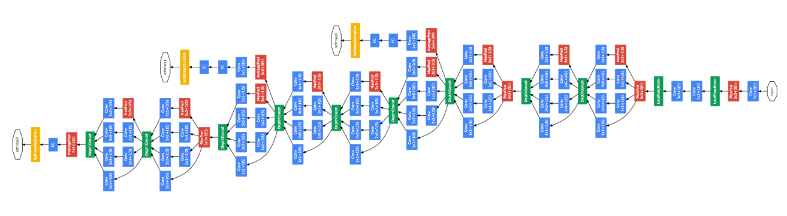

Introduction to Convolutional Neural Networks using TensorFlow and Keras
PyData London 2017
Oliver Zeigermann / @DJCordhose
Slides: http://bit.ly/java-cnn
Our Challenge for today: Recognizing Speed limit signs
- built into luxury cars for almost 10 years now
- We use real images from German streets
- Low Resolution, Overall bad Quality, Limited number of samples

Big Kudos to Traffic Sign Recognition with TensorFlow by Waleed Abdulla for providing the initial idea and many of the functions used to prepare and display the images
Using Jupyter Notebooks
There are two ways of following along
- Using preview of Notebooks on Github: https://github.com/DJCordhose/speed-limit-signs/tree/master/notebooks/azure (all you need is a browser and Internet)
- Using the interactive version on Azure Notebooks: https://notebooks.azure.com/djcordhose/libraries/cnns (requires you to register on azure, but free of cost)
Please do not try a local installation now, rather try that later @home
Task 0: Looking at the samples and understanding the challenge
What preparation is needed?
Jupyter Notebook basics
We open the first notebook and go through it together
https://notebooks.azure.com/run/djcordhose/cnns?dest=/notebooks/pydata-london.ipynbSteps
- Open link to notebooks: https://notebooks.azure.com/djcordhose/libraries/cnns in any browser
- Click on the notebook named pydata-london.ipynb
- Either log in with your existing Microsoft Account or create a new one
Task 1: Train and Validate a simple Keras Model
Task 2: Creating a convolutional Network
Deep Learning

Convolutional Networks (CNN)
special networks to process images
using different kinds of specialized layers
often used with pre-trained models
Google Inception Convolutional Network architecture to classify images
Convolutional Networks
turning shallow, but large data into deep semantic information
- some layers turn input into a number of filtered outputs
- other layers down sample images (giving them a lower resoluation)
- each layer adds semantic information

Udacity Course 730, Deep Learning (L3 Convolutional Neural Networks > Convolutional Networks)
Convolutions

Translation Invariance
Intuition for Convolutional Networks
E.g. to recognize dogs (again a classification problem)
using an internal representation like

https://auduno.github.io/2016/06/18/peeking-inside-convnets/
Convolutional Layer
.layer(0, new ConvolutionLayer.Builder(5, 5) // 5x5 kernel
.nIn(1)
.stride(1, 1) // how far do the filters move with each step?
.nOut(20) // number of filters applied
.build())
You cascade many of them having down sampling in between
Down Sampling Layer
.layer(1, new SubsamplingLayer.Builder(SubsamplingLayer.PoolingType.MAX)
.kernelSize(2, 2)
.stride(2, 2)
.build())
Reduces data sizes and risk of overfitting
Layout of a typical CNN
 http://cs231n.github.io/convolutional-networks/
http://cs231n.github.io/convolutional-networks/
Last Two Layers are again standard
.layer(4, new DenseLayer.Builder().activation(Activation.RELU)
.nOut(500).build())
.layer(5, new OutputLayer.Builder()
.nOut(10)
.activation(Activation.SOFTMAX)
.build())